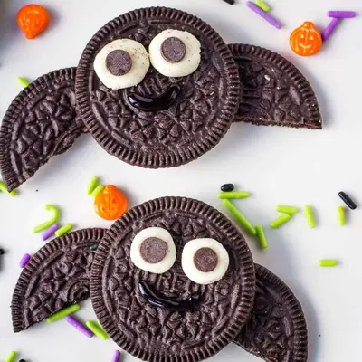

Oreo Bats Halloween Cookie

Ingredients
- 12 Oreo Cookies
- 24 mini chocolate chips
- black or white decorating gel
Steps
- Twist the cookie so that the two chocolate cookies are separated. The cream will usually stick mostly to one side.
- With a butter knife, scrape half of the cream off of the cookie. Divide that cream into two, and roll into two small balls. Gently flatten with your finger. These two rounds will become the white of the google eyes.
- Place a mini chocolate chip in the center of the two white rounds. Now you have two google eyes!
- With the chocolate cookie that doesn't have any cream, carefully break in half. This can be a bit tricky to get the perfect break. If it's not quite the perfect break halfway down use the butter knife to scrape a little cookie off the center to try to even them out.
- With the decorating gel draw a smile and two dots where you will place the eyes.
- Press the google eyes on the center of the unbroken cookie. Using the cream on the other side of the cookie as glue press the broken cookie on either side to create the wings, rounded end up.
Recipe by Anjali Shah · The Picky Eater, from The Picky Eater. Saved here for personal use; the original has the full notes, tips and photos. Open original